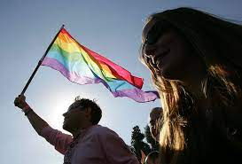
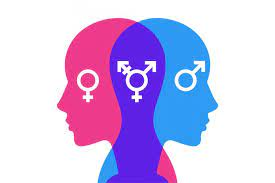
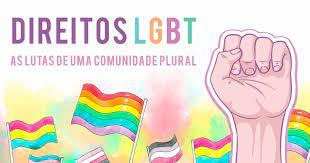
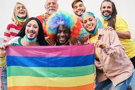
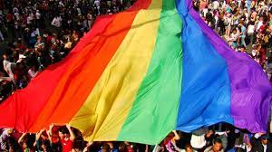
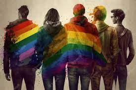
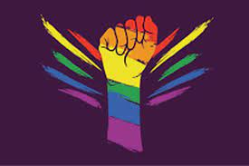

História e Movimento LGBT
O movimento LGBT tem uma história marcada por desafios e conquistas. Desde décadas anteriores, quando a
homossexualidade era frequentemente criminalizada, até os anos 1960, quando o movimento pelos direitos
civis nos EUA inspirou ativistas LGBT, a luta pela igualdade ganhou impulso.

A década de 1980 foi marcada pela crise da AIDS, gerando ativismo e conscientização. Nas décadas
seguintes, ocorreram ganhos legais, visibilidade e avanços globais, incluindo a legalização do casamento
entre pessoas do mesmo sexo em muitos países.
Identidade de Gênero e Orientação Sexual
Identidade de gênero é quem uma pessoa se sente por dentro, se homem, mulher, ou algo diferente.
Orientação sexual é sobre quem alguém sente atração, seja por pessoas do mesmo gênero, outro gênero, ou
ambos.

Respeitar a identidade de gênero significa aceitar como a pessoa se enxerga. Respeitar a orientação
sexual é aceitar quem uma pessoa ama. É importante lembrar que esses dois aspectos são diferentes, mas
ambos contribuem para a diversidade humana. A compreensão e o respeito por essas diferenças ajudam a
criar uma sociedade mais inclusiva e acolhedora.
Direitos e Desafios
A comunidade LGBT busca direitos fundamentais, como casamento igualitário e proteção contra
discriminação. Avanços legais proporcionaram maior visibilidade e representação. No entanto, desafios
persistem, incluindo discriminação, leis discriminatórias, questões específicas para pessoas transgênero
e a necessidade de mais educação para promover aceitação. O respeito aos direitos e a luta contra a
discriminação são essenciais para construir sociedades justas e inclusivas.

Cultura LGBT



A cultura LGBT é diversificada e influente, contribuindo para a arte, entretenimento e movimentos sociais. Artistas e eventos, como paradas do orgulho, celebram a diversidade. No entanto, persistem desafios, incluindo estereótipos prejudiciais e a necessidade contínua de representação mais ampla. A comunidade enfrenta também questões de saúde mental relacionadas à discriminação. A promoção do respeito e da inclusão é vital para uma cultura mais justa e acolhedora.
Recursos e Apoio

Recursos e apoios para a comunidade LGBT incluem organizações dedicadas, linhas de ajuda, centros de saúde especializados e grupos de apoio. Alianças e defensores desempenham um papel vital na promoção da conscientização. Enfrentar desafios como estigma e discriminação requer acesso a serviços jurídicos e de saúde mental. Esses recursos são essenciais para construir uma rede de suporte e promover a inclusão.